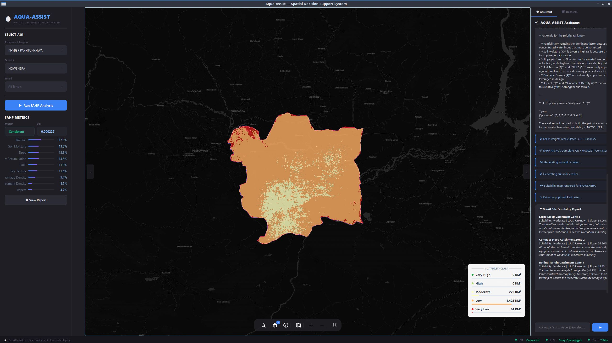
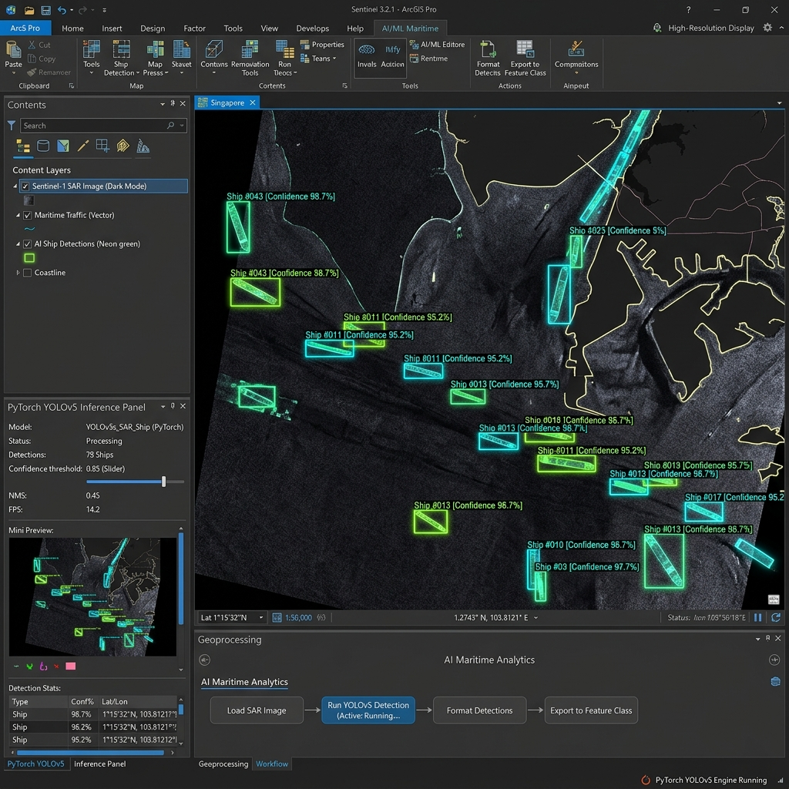
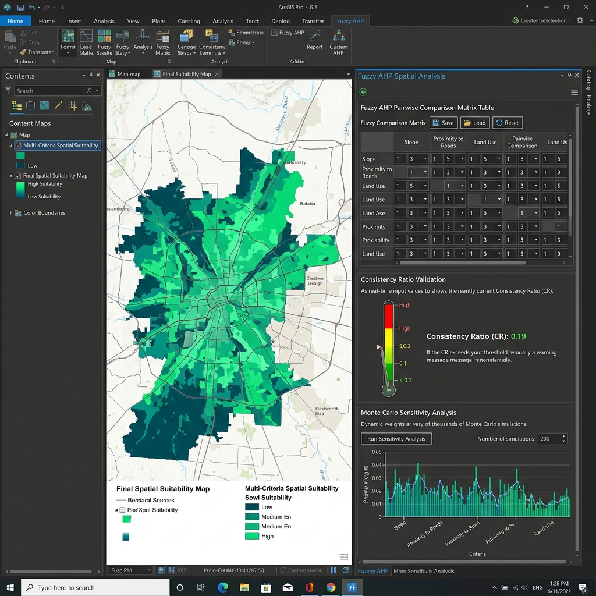
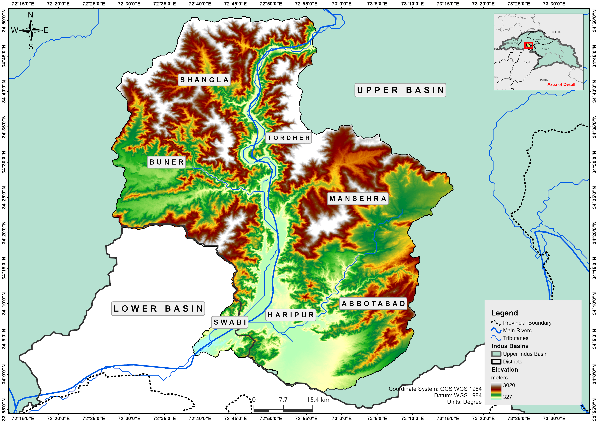
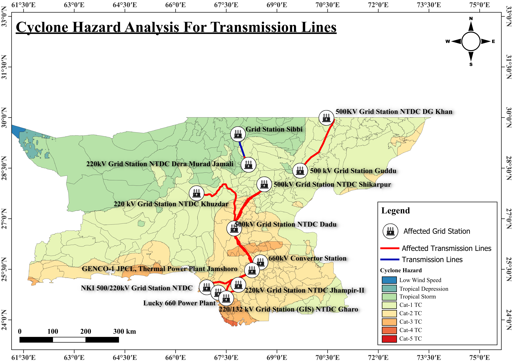
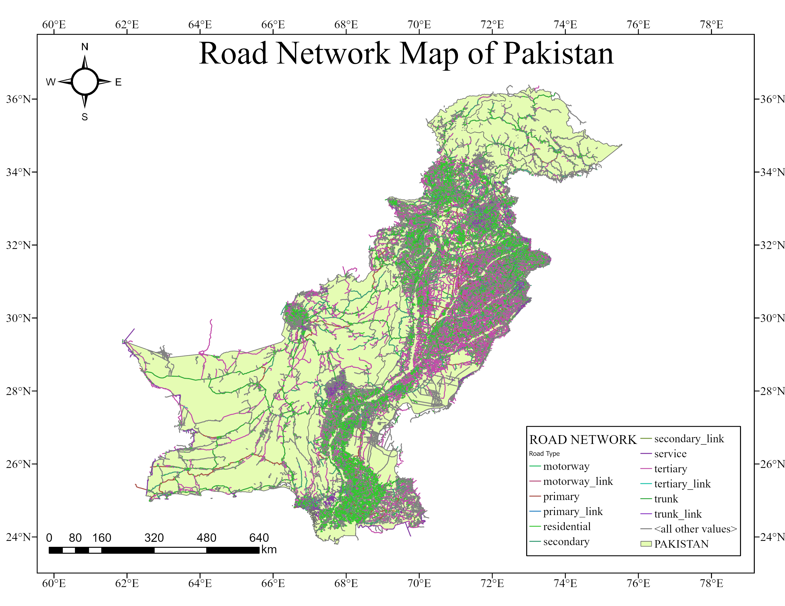
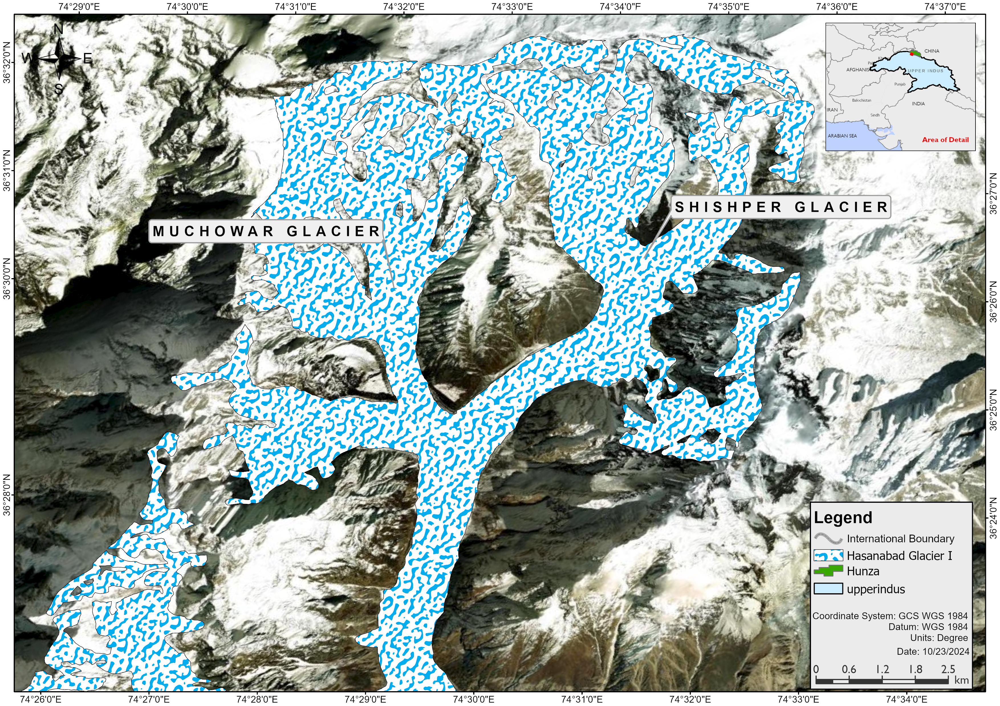

Muhammad Taimoor
Ashfaq Malik
GIS & Remote Sensing Specialist | GeoAI Developer | Geospatial Software Engineer
Architecting Spatial Decision Support Systems, custom ArcGIS Pro .NET SDK extensions, satellite remote sensing pipelines, and agentic GeoAI analytics.
Bridging Geospatial Science & Artificial Intelligence
Passionate about building scalable geospatial software, automating complex geoprocessing workflows, and leveraging AI/LLM technologies to empower spatial decision-making across disaster management, hydrology, and urban planning.
GeoAI & Machine Learning
Integrating computer vision (YOLOv5) for Synthetic Aperture Radar (SAR) object detection and embedding local LLMs (Ollama/LangChain) into Spatial Decision Support Systems for autonomous spatial reasoning.
ArcGIS Pro SDK & Desktop Tools
Engineering professional C#/.NET 8 Add-Ins for ArcGIS Pro with real-time Consistency Ratio validation, ArcPy geoprocessing automation, PyInstaller GUI packaging, and standalone spatial conversion utilities.
Remote Sensing & Hydrology
Modeling 30-year soil erosion and reservoir capacity loss via RUSLE equations, multi-spectral spectral index mapping (Landsat/Sentinel-2), GEE satellite batch processing, and GLOF disaster risk assessment.
Spatial Data Infrastructures & Web GIS
Architecting PostGIS spatial databases, topology validation for Pakistan’s National Spatial Data Infrastructure (NSDI), and building responsive web mapping dashboards using React.js, Leaflet, and OpenLayers.
Featured Geospatial & GeoAI Projects
A curated portfolio of software add-ins, decision support systems, satellite analytics, and automated geospatial toolboxes.

GeoAI / SDSSAquaAssist: GeoAI Spatial Decision Support System
Agentic SDSS for rainwater harvesting suitability zonation. Uses DEM/multispectral raster analysis, Fuzzy AHP, local Ollama LLM reasoning, and Streamlit/PyQt Folium map interface.

ArcGIS Pro Add-InArcGIS Pro Add-In for AI Ship Detection
Custom ArcGIS Pro Add-In automating maritime object detection across SAR & optical satellite imagery using a custom-trained PyTorch YOLOv5 neural network and ArcPy wrappers.

ArcGIS Pro Add-InAHP / FAHP Spatial Analyzer Add-in
C#/.NET 8 Add-in for spatial MCDA featuring real-time Consistency Ratio (CR) validation, ArcPy raster overlay execution, and dynamic Monte Carlo sensitivity analysis module.

Remote SensingRUSLE Soil Erosion & Tarbela Reservoir Model
Modeled 30-year climate-induced soil erosion & sedimentation trends in Tarbela Region using RUSLE. Published research revealing a 65% capacity reduction.

Disaster RiskDigitization of NGCP Infrastructure Data
Digitization of energy infrastructure and extensive spatial disaster risk analysis for multi-hazard scenarios including cyclones and floods.
 Spectral Indices
Spectral Indices
Salt-Affected Soil Spectral Mapping (Chakwal)
Mapped soil salinity distribution in Chakwal using satellite spectral indices (NDSI, NDVI, VSSI, SI1–SI4) from Landsat 8/9 and Sentinel-2 imagery.

NSDI InfrastructurePakistan NSDI Road Network Digitization
Developed a refined road network dataset as a foundational component of Pakistan’s NSDI, resolving fragmentation, topology errors, and geometry misalignments.

Disaster AssessmentGLOF Disaster Management: Shishper Glacier
Multi-sensor satellite analysis (Landsat-8/9, Sentinel-2, ALOS PALSAR) of the 2022 Shishper GLOF event for rapid melt trigger identification & damage modeling.
Shapefile to KML Converter Desktop App
Standalone Python desktop GUI app converting ZIP shapefiles to reprojected KML files for Google Earth, packaged into an executable using PyInstaller.
Rainwater Harvesting Zonation (KPK)
Multi-criteria spatial decision analysis integrating Google Earth Engine and QGIS with FAHP to identify optimal RWH agricultural zones in Khyber Pakhtunkhwa.
Published Journal Article
Developing a RUSLE-Based Tool for Analyzing Climate Induced Soil Erosion and Reservoir Sedimentation in the Tarbela Region
Designed and implemented a Python-based GIS tool modeling 30 years of soil loss and reservoir storage depletion in Tarbela Reservoir. Results quantified a 65% capacity reduction due to sediment inflow, providing critical data for national climate adaptation policy in Pakistan.
Experience & Education Timeline
Work Experience
Junior GIS Analyst
- Translated urban planning codes into structured spatial datasets for large-scale zoning projects.
- Engineered custom Python scripts automating data cleaning, batch processing, and cloud uploads.
- Iteratively refined internal QA tools, boosting output validation speed.
GIS Intern
- Digitized & managed Pakistan’s energy infrastructure datasets for national risk assessment.
- Conducted flood extent mapping for Punjab flood events evaluating hazard severity.
- Built Python satellite data acquisition pipelines integrated with PostgreSQL/PostGIS.
- Trained in React.js for interactive geospatial web applications.
Research Intern
- Developed RUSLE soil erosion tool modeling 3-decade sedimentation in Tarbela Reservoir.
- Executed mangrove restoration site suitability using Multi-Criteria Decision Making (MCDM).
- Authored Python GIS toolboxes streamlining automated geoprocessing tasks.
Cadastral Mapping Intern
- Digitized land parcel boundaries & conducted topology error removal.
- Developed Python automation scripts for parcel database management.
Education & Academic Track
Master's in Remote Sensing & GIS
Advanced spatial analytics, GeoAI applications, satellite radar imagery, and spatial statistics.
BS Geoinformatics
Final Grade: 3.61 CGPA
Thesis: Developing a Web-Based Tool for Spatio-Temporal Crop Mapping using Sentinel Imagery in Punjab Region.
Intermediate (F.Sc)
Certifications & Professional Training
Introduction to GIS Mapping
Fundamentals of map design, coordinate systems, and vector layer analysis.
Fundamentals of GIS
Geospatial data structures, raster operations, and spatial query design.
Going Places With Spatial Analysis
Spatial analysis workflows, suitability modeling, and proximity algorithms.
Make An Impact with Modern GeoApps
Building web applications using Experience Builder, Web AppBuilder, and ArcGIS Online.
Spatial Data Science: The New Frontier
Advanced spatial machine learning, cluster analysis, and Python spatial statistics.
Basics of AUTOCAD Civil 3D
Civil infrastructure surface modeling, alignments, and grading techniques.
Technical Skills Matrix
GIS & RS Software
Programming & SDKs
GeoAI & Databases
Web Viz & Tools
Let's Collaborate On Your Next
Geospatial / GeoAI Project
Available for GIS Analyst, GeoAI Engineering, Spatial Software Development, and Research roles worldwide.